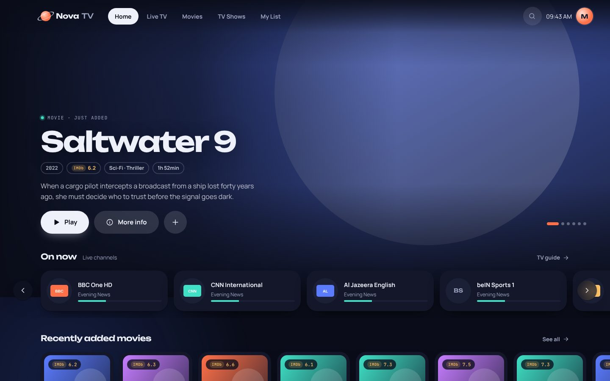
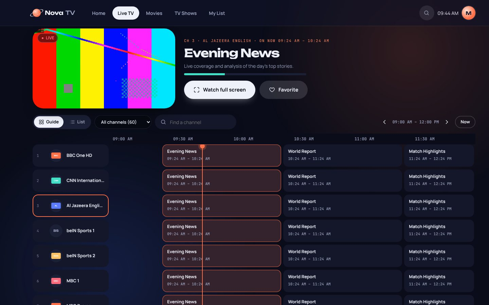
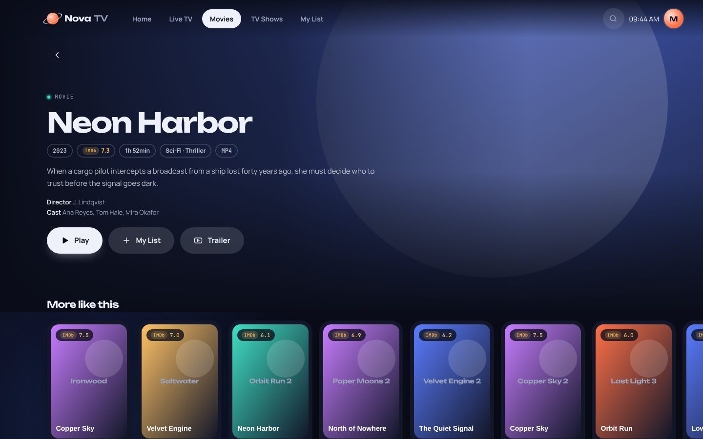
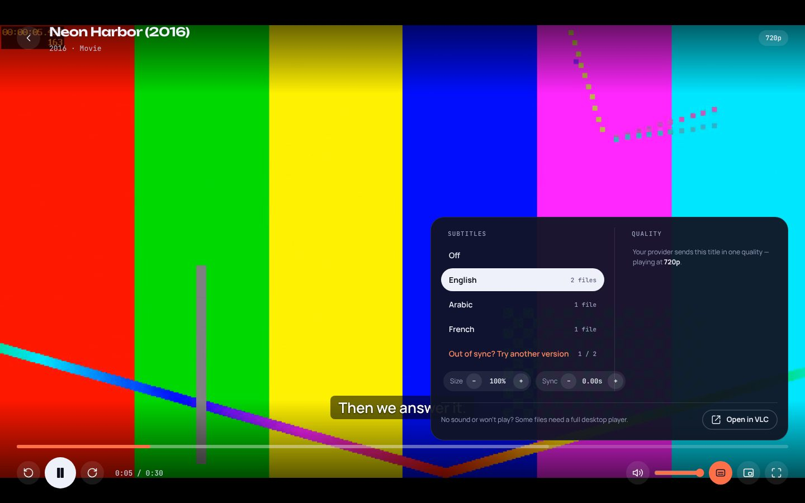
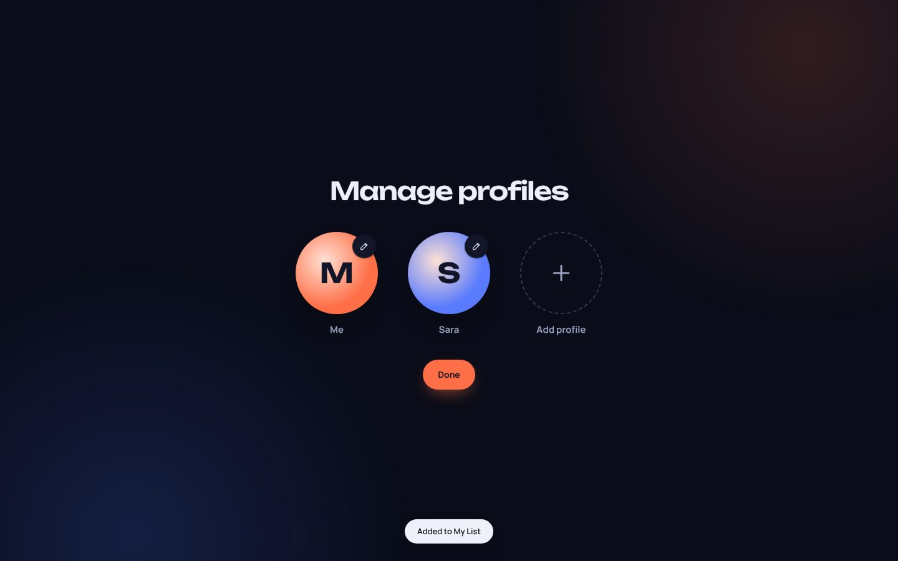

Your IPTV,
made cinematic.
Nova TV turns your IPTV subscription into a beautiful Mac app — a real TV guide with catch-up, movie and show pages with IMDb ratings, subtitles in dozens of languages and a floating mini player.

Everything a great TV app should do.
Built around the way you actually watch: jump into live TV, pick up a show where you left off, or keep a match playing in the corner while you browse.
Live TV guide & catch-up
A full TV guide with what's on now and next. Start a programme from the beginning, or replay one that already aired on catch-up channels.
Movies & TV shows
Big banners, rows by category and full show pages with seasons, episodes and "continue watching".
Better posters & IMDb ratings
Every title is matched on IMDb for sharp posters, backdrops, ratings, cast and trailers — automatically.
Subtitles, built in
Subtitles in dozens of languages, found automatically. Make them bigger, fix the timing, or try another version in one click.
Pick your quality
Switch between SD, HD, Full HD and 4K versions of a channel, or let it choose the best quality automatically.
Floating mini player
One button pops the video into a small window that floats over everything — even full-screen apps.
Profiles for everyone
Each person gets their own My List, favourite channels and Continue watching.
Updates itself
New features arrive automatically in the background. Install once, never think about it again.
Private by design
Your IPTV login stays on your Mac. No accounts, no tracking, no sign-ups.
Take a look around.
A guide that feels like real TV.
Preview any channel instantly, see what's on now and next, and press one button to start a programme from the beginning.
- Guide or list view
- Catch-up on supported channels
- Favourite channels on your home screen

Every title gets the full treatment.
Backdrops, IMDb ratings, cast, trailers and every episode laid out by season — with progress bars so you always know where you were.

Subtitles and quality, one tap away.
Press S while watching to pick subtitles in your language, resize them, fix the sync, or change the stream quality.

Who's watching?
Up to six profiles, each with their own list, favourites and history.

Ready to press play?
Install takes about two minutes. You'll paste one line into Terminal — the guide walks you through every step.
Questions, answered.
Is Nova TV free?
Yes. Nova TV is a free player. It doesn't include any channels or content — you use it with your own IPTV subscription.
What do I need to log in?
The details your IPTV provider gave you: a server URL, username and password (Xtream Codes), or an M3U link.
Which Macs does it work on?
Any Mac running a recent version of macOS — both Apple Silicon (M1 to M4) and Intel. The installer picks the right version automatically.
Why install with Terminal?
Nova TV isn't sold through the App Store, so macOS would block a normal download. The one-line installer downloads it straight from GitHub and sets it up so it opens without warnings.
How do updates work?
Automatically. Nova TV checks for updates in the background and installs them for you.
A movie won't play or has no sound — what now?
Some files use audio formats the built-in player can't decode. Press "Open in VLC" in the player to watch it in VLC (free from videolan.org).